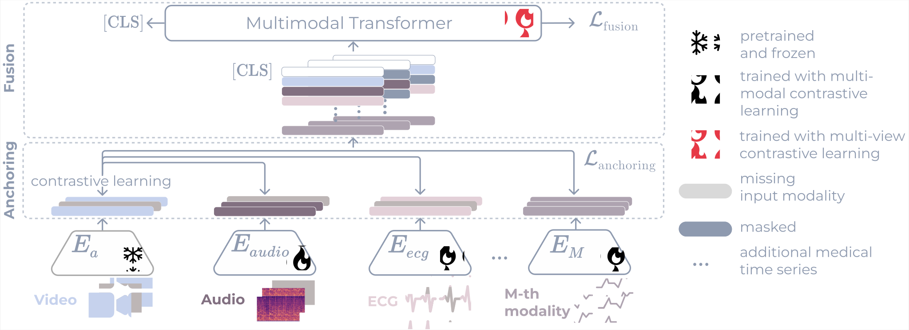

Multimodality has recently gained attention in the medical domain, where imaging or video modalities may be integrated with biomedical signals or health records.
Yet, two challenges remain: balancing the contributions of modalities, especially in cases with a limited amount of data available, and tackling missing modalities.
To address both issues, we introduce the AnchoreD multimodAl Physiological Transformer (ADAPT).
ADAPT is a multimodal, scalable framework with two key components: (i) aligning all modalities in the space of the strongest, richest modality (called anchor) to learn a joint embedding space, and (ii) a Masked Multimodal Transformer, leveraging both inter- and intra-modality correlations while handling missing modalities. We focus on detecting physiological changes in two real-life scenarios: stress in individuals induced by specific triggers and fighter pilots' loss of consciousness induced by g-forces. We validate the generalizability of ADAPT through extensive experiments on two datasets for these tasks, where we set the new state of the art while demonstrating its robustness across various modality scenarios and its high potential for real-life applications.
physiological response reconding: stress
physiological response reconding: no stress
physiological response reconding: no stress
physiological response reconding: no stress
physiological response reconding: stress
❮
❯
How to detect physiological responses in individuals with video, audio,
biomedical signals and missing modalities ?
(StressID, Chaptoukaev al., 2023)
Approach

ADAPT takes up to M modalities, including video, audio, and biosignals, as input to produce a modality-agnostic representation for downstream tasks.
It is trained in two steps. (i)Anchoring. We align the representations of all modalities via
contrastive learning to the one of an anchor modality, i.e., the strongest and richest modality; here
the video. (ii)Fusion. The encoders’ features are concatenated and fed into the Masked Multimodal
Transformer. When a modality is unavailable, the transformer masks its corresponding feature
representations. The final representation (i.e., [CLS] token output) is used for downstream tasks.
Bibtex
@inproceedings{
mordacq2024adapt,
title={ADAPT: Multimodal Learning for Detecting Physiological Changes under Missing Modalities},
author={Julie Mordacq and Leo Milecki and Maria Vakalopoulou and Steve Oudot and Vicky Kalogeiton},
booktitle={Medical Imaging with Deep Learning},
year={2024},
month={July}
}
Acknowledgements
This work was partially supported by Inria Action Exploratoire PreMediT (Precision Medicine using Topology) and the ANR-22-CE39-0016 APATE. Additionally, it was partly performed using HPC resources from GENCI-IDRIS (Grant 2023-AD011014747). We would like to thank Yasser Benigmim for proofreading and the anonymous reviewers for their feedback.